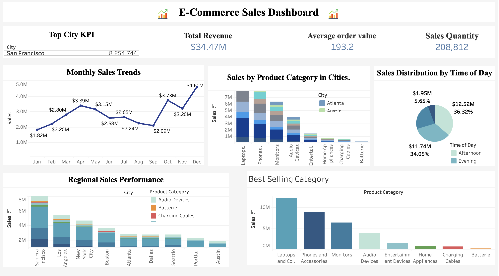
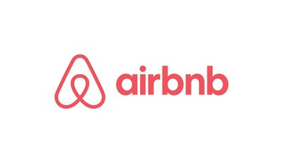
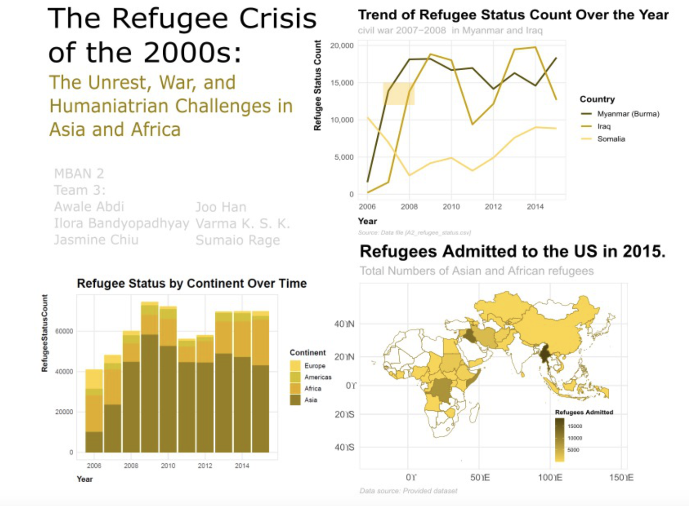

This project involves the analysis of e-commerce sales data to uncover key trends, product performance, and customer purchasing patterns. The goal was to create an interactive Tableau dashboard that provides actionable insights for optimizing business strategies, enhancing customer engagement, and driving revenue growth.
The analysis covered various dimensions, including monthly sales trends, top-performing products and categories, regional sales performance, and time-of-day purchasing behavior. Key performance indicators (KPIs) such as Total Revenue, Average Order Value, and Sales Quantity were highlighted for an at-a-glance overview of business performance.
Through data cleaning, exploratory analysis, and advanced visualization, the project identified critical insights, such as the impact of seasonal demand during December, the dominance of Laptops and Phones in sales, and the contribution of top-performing cities like San Francisco. The dashboard empowers stakeholders with the ability to filter and explore data dynamically, making it a valuable tool for data-driven decision-making.
This project demonstrates a blend of analytical skills and visualization expertise, showcasing the use of Python for data preparation and Tableau for creating insightful dashboards.

Developed an interactive Tableau dashboard to analyze Pfizer's COVID-19 vaccine distribution across regions. The project highlighted underserved markets and suggested strategies for equitable distribution, emphasizing global health equity. Tools used: Tableau for visualization, Python (Pandas, Matplotlib) for data preparation, and Excel for dataset organization.

Applied natural language processing techniques like sentiment analysis, TF-IDF, and LDA topic modeling on Airbnb listings to uncover trends in guest reviews and property descriptions. Insights guided recommendations for optimizing pricing strategies and improving guest satisfaction. Tools used: R (tidytext, ggplot2) for NLP and data visualization, Shiny for interactive dashboards.
This project analyzed a German credit card dataset to uncover insights about credit risk profiles segmented by age and credit duration.
By identifying high-risk demographics and crafting tailored product offerings, actionable recommendations were provided to improve financial stability and client satisfaction. Tools used: Tableau for data analysis and visualization, Excel for data summarization.

Analyzed refugee migration data to uncover patterns influenced by geopolitical crises in Asia and Africa. Created time-series visualizations and interactive maps to communicate trends effectively, adhering to CRAP and Kieran Healy’s principles. Tools used: R (ggplot2, dplyr, sf) for data analysis and visualization, QGIS for geospatial mapping.
Conducted an in-depth analysis of operational data for an oil and gas trading company. The project focused on optimizing trading strategies, enhancing efficiency, and minimizing risk. Tools used: Python (Pandas, NumPy, Matplotlib) for data analysis and visualization.